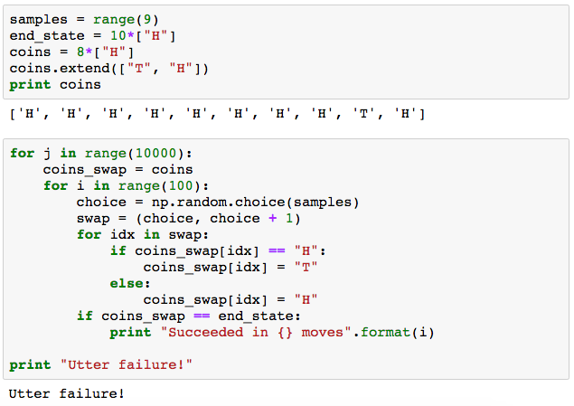

The Problem
You have a set of 10 coins in the formation:
(H = heads, T = Tails). Is it possible to flip only pairs of adjacent coins so that all the coins end up heads?
The Solution
For starters we know that we can't get stuck. Why not? Flipping the same pair of coins will send us back a move. This means that we always have an inverse function for every move.
My first solution was via raw computing power. I put together a small program to simulate flipping adjacent coins randomly. I set 10,000 trials of 100 flips each. This resulted in utter failure
 You may notice that my starting position in the code is HHHHHHHHTH. This is 2 moves from (and to) the original state of the coins. I simply flipped the two adjacent pairs of Tails in locations (1,2) and (4,5), assuming 0 indexing.Since there are 2**10 = 1024 unique states of the coins and we flipped coins 1,000,000 times, the probability of us not getting a possible state is incredibly low. To verify this, I set the the end_state to TTHTTTTTTT. This is a state I know is achievable (I'll challenge you to solve that if you don't believe me). This produced success 20% of the time. From this, we can infer that the probability of success within 100 moves for an arbitrary state is roughly 20%. If the probability of any single trial's success is around 0.2, then the probability of no trial out of 10,000 succeeding is effectively 0. In fact, with the amount of decimal places that Python computes to, the output of 0.8**10,000 is 0.
But Why?
It turns out we can prove that getting to HHHHHHHHHH from HTTHTTHHTH is impossible. Let x be the number of heads in our original coin configuration (HTTHTTHHTH) and let y be the number of tails. Since x = y = 5, we know:
- x % 2 = 1
- y % 2 = 1
- HH → TT ( φ(x, y) = x - 2, y + 2 )
- TT → HH ( φ(x, y) = x + 2, y - 2 )
- HT → TH ( φ(x, y) = x, y )
- TH → HT ( φ(x, y) = x, y )